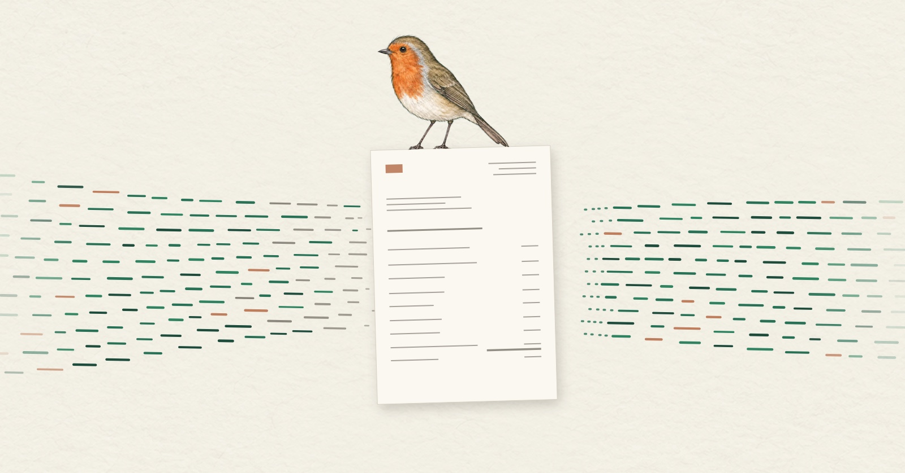

Seamless data flow – where data still slips between paper and screen

Accounting still lives between paper and screen. A client marks up a scanned invoice and sends it to us through the client portal, but the notes on the image do nothing to the underlying data. That is a break in the digital chain – and a common source of errors and hold-ups.
So is it enough to leave the scanned invoice behind? Not quite. Data gets keyed in twice in plenty of other places. Copying figures by hand from one system into another, because nobody has set up an interface, is just as much a break in the chain. More on that in my next piece, on interfaces.
This is about more than efficiency, as Section 145(1) of the German Fiscal Code (AO) makes clear: it must be possible to trace business transactions "from their origin through to their completion". For that reason, the GoBD, the German principles for electronic bookkeeping, require procedural documentation for every IT system. It sets out the intended process – for electronic documents, from the moment the information is created, through processing and storage, to the point where it can be analysed by machine (GoBD paras. 151, 152). How detailed it needs to be depends on the complexity of the business and of the system in use. Every break in the chain is a separate step in it that someone has to explain.
As I wrote last time, since 14 July 2025 the structured data has been sufficient for an e-invoice (para. 119). What matters is what happens to it afterwards. E-invoices received must be kept in the format in which they arrived, and converting them must not delete the XML part (paras. 125, 131). Print out an XRechnung and file it, and the break is back.
This comes to light in a tax audit through indirect data access, where taxpayers analyse their own data by machine according to the tax authority's instructions (para. 166). Only what exists in structured form can be analysed. Gaps in the procedural documentation only count as a defect that may lead to the books being rejected if they undermine traceability (para. 155). And breaks in the chain are exactly where traceability is most easily lost.
The rules for audits are changing as well. On 10 July 2026, the Bundesrat approved the new External Audit Regulation (Außenprüfungsordnung, ApO). It replaces the Business Audit Regulation of 2000, is meant to speed up tax audits and sets out a risk-based approach (Section 2 ApO). Removing breaks in the chain does more than save time – it means you can explain how your data flows.